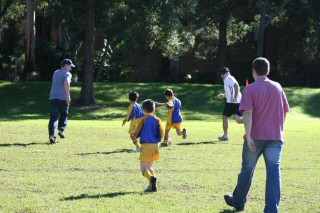

| Match Report - 06 June 2009 |
|
|
|
|
|
|
|
|
|
|
Yet again this week, it was such a close match. Well done to the NRS Purple team
for the consistent improvement! This week everyone was super keen to get on the
field and play, so they all had a great run. Most of the Purple's appear to prefer
the defensive techniques of the game, trying to block balls and guard the goal.
Lukah and Lucas blocked a few
NHF goals, with Lukah running near the length of the field to make a save.
Will did some fantastic attacking of the ball today,
blocking it in front of the NHF pack. Jasmine and
Cameron also did some good ball blocks too. Good kicking
came from Jayden all over the field.
Given we scored twice for the other team, we're on track for a win really soon!
All the kids loved their muddy spotted socks at the end of the game.

Congratulations to the Player of the Week - Will
- Sally Last (Supermum)
|
|
|
| U6 Red B |
|
North Ryde Red B - Putney Rangers B
|
|
|
|
The long trek from those that parked on Buffalo Road would prove to be too much for
some of our players to handle. This is certainly one ground where home ground advantage
plays a big part and the fact that our opponents had all entered from the Victoria
Road end, meant that their players would be a lot fresher. If you think I'm looking
for excuses or simply clutching at straws, then you are correct!
On a more serious note, it was nice to actually string two consecutive games together
as previous washouts were making it difficult for our coach Chris to develop our team's
skills. On what looked to be dry and firm pitch, a high scoring match was seemingly
in order and the crowd weren't disappointed... perhaps the Putney crowd that is!
From the outset, our opponents looked sharp in attack and our guys in particular
Dominic, Emma and
Ben were working overtime in defence. As the ground was in
pretty good shape, this was a more expansive game than we were used to and it also
meant that Ben was able to make a few inroads into Putney's
half only to lack a bit of support at the final pass.
Jake and Felix were introduced
into the game midway the first half and both were very keen to make an impression.
Jake found himself in the thick of the action trying to get
the ball going forward and Felix was doing the hard work in
the heavy exchanges trying to win the ball for the likes of Ben
and Emma to make incisive runs downfield. Whilst all this
was going on, Erin was her usual efficient self, providing
her team mates with some excellent passes from re-starts from the goal and sidelines.
Try as they might, we were being outplayed by a very good opposition and it would
have been easy to just go through the motions after half time. The second half showed
why our team has got the potential blend into a very good unit, as they more than
held their own in the second half, perhaps even taking the honours.
Dominic was a rock in defence, frustrating his opponents
on a number of occasions. Felix again kept 'winning' the
hard ball and Emma whilst dealing with some physical
marking from her opponents, more than held her own and created plenty of scoring
opportunities. Erin was doing the little things right and
Ben was making raids downfield with monotonous regularity.
Our Player of the Match this week was
Jake, our little quiet achiever who is growing in
confidence more and more every week. Jake kept going
the whole game and was never far away from the action.

With a bit of 'brushing up' on our calling and passing game, the signs look good
for our team. The eagerness is there, the enjoyment is there and the skills are
definitely improving.
- Paul Bonaventura
|
|
|
| U6 Red C |
|
North Ryde Red C - Gladesville Ravens A
|
|
|
|
We played good. We did good passing and good running and kicking into freespace.
Luke, Martin and Kate played good.
- Vivek Waller (Player, aged 5)
|
|
|
| U7 Red A |
|
North Ryde - All Saints H/Hill C
|
|
|
|

Our opposition, All saints Hunters Hill C, didn't turn up for the match this weekend,
so the Dad's stepped up to the plate and had a game with the boys.
Which they won by 3 goals to 2!
- Rob Wylie (Coach)
|
|
|
|
|
|
Wow, what a game! Talk about another exciting one... all the boys where fired up
(and not to mention the supporters too) the boys gave it their all.
Some great runs by Kaiden, Luke M and Jay. Blake and Alex as always never shy to
get in amongst it and some great team work by all especially Luke A's great goals
and Jarrod's great goal and ball skills.
Lets keep it up boys... stay pumped... stay focused... and most of all have a fun
and enjoy it.
Also special mention to Steve's sterling refereeing in second half.
Encouragement award for the week went to Blake. Well done Blake and well done
North Ryde.
Go North Ryde!
- Jerome Howe (Blake's Dad)
|
|
|
| U8 White |
North Ryde 0 - Ryde Saints United 5

|
|
|
|
It was a game of what ifs for the under 8 division white team this week. Playing away
to Ryde Saints United we came across a very evenly matched team in what turned out
to be a very entertaining match. With a little more luck the result could have very
easily gone the other way.
Highlights of the first half included Zane's effort in goal with a massive 10 goal
saves as well as great shots on goal by Salim, Christian and Hayley. There was plenty
of ball movement up and down the field with Connor, James and Jack getting the ball
out into free space superbly. We were unlucky to be down 1 nil at the break after a
lucky goal from Saints. The crowd highlight was a slip and fall into the mud from
the ref (me). Mental note - bring better shoes next week.

The second half produced a mixed bag of excellent attacking play from North Ryde as
well as some long range goals from the opposition. Lioda was in the thick of the
action as usual showing some great skills but the player of the day went to
Christian who had an outstanding 6 attempts at goal and was very unlucky not pick
up a couple of goals.
Let's hope the weather holds out and we can have a much needed training session
this week.
- Lee Crafar (Coach)
|
|
|
|
|
|
After another wet and gloomy week, and what seemed like weeks of rained-off
training and games, Saturday finally dawned with a sunny and bright blue sky!
We arrived at Holy Cross glad to see the sunshine and to be playing at a local
ground!
As soon as the ref's whistle blew a fierce contest began and both teams slogged out
a hard, tight and low-scoring match despite the long grass and wet track.
North Ryde launched repeated attacks. Patrick was rock solid.
David, Adam and Shannon fought hard and had a few great shots. Tom Hurst was everywhere
in defence and delivered some top passes.
One of Tom H's passes was a well-timed delivery through to Shannon, who moved towards
the goals at pace and slotted a cracking shot past the keeper to give North Ryde the
lead.
Well done to Mark who did a great job running the line, and retrieving the match ball
when it accelerated down the hill.
Tom Maclean, Charlie, Jack, Eli, Anthony and Harrison all played strong and helped win
the battle.
In the second half North Ryde launched a barrage of attacks on the Saints goalie, and
with a bit more luck it could have been 5-nil.
There were 4 corners that were close to adding to the scoreboard, and quite a few
long-range shots that were just off target. Jett's terrific shot shaved the post
leaving us all thinking it was a goal.
Pauline was cool, calm and calculated in the way she orchestrated our game plan and
the run of play.
Well done team, coach, players, linesman, supporters and match officials - another
entertaining contest was enjoyed by all!
- Tony Saba (Parent)
|
|
|
|
|
|
Well, after our training was washed out during the week, the weather finally came
good for us and we enjoyed a beautiful warm & sunny day at West Epping Oval. Our
opposition being the formidable Glenhaven team challenged our goal early but some
quick thinking by Thomas O saw the ball taken straight back into the other half.
It wasn't long before the pressure was back onto us though with Glenhaven scoring
in the first 4 minutes of the game.
Glenhaven went on to challenge time & again which tested our defence to it's limits.
Andrhea was at her usual defensive best preventing many attempts at goal by Glenhaven,
keeping the attacking opposition busy whilst our other team members could get into a
better defensive position.
Some good play by Liam saw the ball back into Glenhaven's half and a bit of our own
attack ensued before finding ourselves defending a relentless attack on our goal. A
brilliant save by Matt only delayed the inevitable second goal by the opposition 8
minutes into the first half.
Rhea arrived late and her inclusion was immediately felt with our attack ability
rising noticeably the instant she took the field.
More attack by Glenhaven followed but some great play by Peter and Liam saw us on
the attack again with Peter in shooting position but found himself shut down by
powerful defence and was unable to score.
There were some more good saves by Matt, a number of great saves by first half Goalie
Hamish who found himself fearlessly diving onto the ball amidst a relentless opposition,
and an incredible save by Sam when Hamish found himself caught too far out. There was
some good work by Satya to keep the pressure on the opposition and great tackling by
Sam enabled Matt to have a shot at goal, however it just went wide.
A corner kick enabled Glenhaven to score a fourth and final goal for the first half.
The second half proved a little better with more attack coming from our side. Ryan was
our goalie for the second half and his tireless defence and big boot certainly helped
to keep the score to a minimum.
Glenhaven eventually scored another 2 goals making the final score 6-0 to them.
- Gary Renouf
|
|
|
|
|
|
Great to actually get out and have a kick around after all that rain. Seems like an
eternity since we trained and that funny yellow ball in the sky made a much welcomed
return, just in the knick of time.
The long weekend and illness knocked our team around this week but we still managed to
make up the minimum nine required to fill a full team.
Well, what a great effort from everyone this week. You ran yourselves into the ground!
We were so unlucky to lose. The West Pennant Hills goalkeeper made so many great saves
and the scoreline was no indication of how the game actually played out.
Tom and Julian shared the
goalkeeping duties and really went well. Both made some excellent saves and kicks to
free space. Their goal-kicks were excellent also. Josh and
Tim were so good in defence, making tackles that saved us
on many occasions. Massie and
Christopher seemed to have build up a good partnership with
their teamwork resulting in an excellent goal to Massie.
Luke and Lucy both tried really
hard all day and Lucy, that was your best game yet! Benyad
was as usual Mr Consistent helping out well up front and at the back.
Days like Saturday make you want the next game to come around as quickly as possible.
Thanks to all the parents, family and friends who turned up to support this great
effort, your support is really appreciated.
See you all at training Wednesday.
- Tony (Assistant Coach)
|